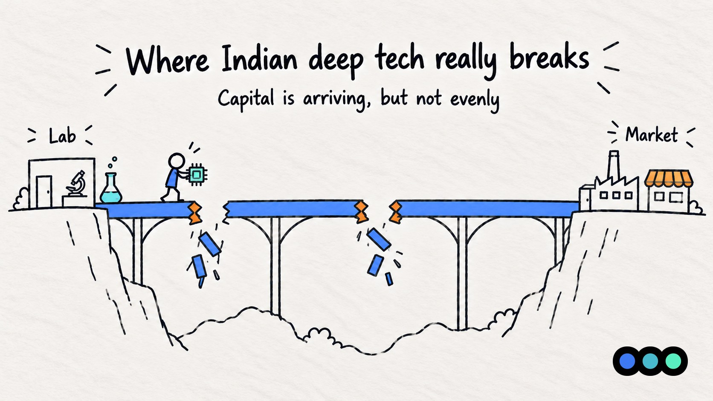

Prologue Blog · Sector Insights
Where Indian Deep Tech Really Breaks
Capital is arriving, but not evenly

Indian deep tech has never had more attention.
The IVCA's Bharat DeepTech Report 2026 puts cumulative private funding at $11.4 billion across 957 deals between 2015 and mid-2026. 2025 was the strongest year on record at $2.99 billion across 189 deals, even though total Indian startup funding fell about 17% that year.
From where I sit, on the investor side of the table, the more useful numbers are further in the report. Capital is arriving, but not evenly. For a founder, the useful question is whether money is available at their stage, and who funds the round after it.
The Earliest Science
The IVCA report describes a "valley of death" at the start of the journey. Only 15% of the 52 funds it surveyed directly are willing to back projects at Technology Readiness Levels 1 to 3, the stage of basic research and proof of concept. The report calls this the pilot gap, too early for commercial capital and past the point where most public grants apply.
Inside a fund, the reason is easy to see. At TRL (Tech Readiness Level) 1-3 there is no product to demo and no customer to call, and the milestones are scientific rather than commercial. The tools we normally use struggle. In a Berkus-style assessment, the "working prototype" box is empty. In a VC-method model, several technical risks must resolve before the first rupee of revenue. We explain both methods in Monica Gupta's guide to valuing pre-revenue startups.
For founders: if you are at TRL 1-3, a standard seed fund is probably not your first cheque, and the government's RDI Scheme will not fill the gap either, since the IVCA report says it finances projects from TRL 4 upward. Expect a thin funding path at this stage: research grants, institutional incubators and the few funds that back lab-stage science.
The Middle
The same report shows investor numbers falling between seed and Series B. 74% of surveyed funds invest at seed, but only 46% at Series B, a 28 point drop. The deal counts agree: 344 Series A deals shrink to 122 at Series B, and the average cheque nearly triples from $6.6M to $20.9M. Nasscom and Zinnov's 2026 start-up report, which covers tech startups generally, also names the move from seed to Series A as the biggest progression gap.
For a VC this affects entry price. If follow-on capital is scarce, a high seed valuation is risky, because the next round has to clear an even higher bar and fewer investors can lead it. It is the usual down-round risk, only worse when the growth-stage market is thin.
A few other numbers from the report help explain why the middle is hard to fill. Only 2% of surveyed funds can write cheques above ₹100 crore, and 42% run 5 to 7 year fund lives against deep tech's 7 to 12 year gestation. 62% name exit visibility as their biggest challenge, although exits are starting to happen: 18 in 2025 worth $600M, against 7 worth $152M the year before.
Two policy changes that change the math
An extended time period. On 4 February 2026, DPIIT notified a revised startup framework (G.S.R. 108(E)) that creates a separate deep-tech startup category. These companies can stay recognised as startups for up to 20 years from incorporation instead of 10, and their turnover cap is ₹300 crore against ₹200 crore for regular startups. Storyboard18 reports that applicants must submit additional documentation showing they meet the criteria.
Why this matters: deep-tech timelines are long, and a ten-year window can run out before revenue scales. Twenty years removes a real mismatch between the policy clock and the technology clock. It also rewards founders who keep their R&D and IP records in order from day one.
A new pool of patient money. According to the Press Information Bureau, the ₹1 lakh crore Research, Development and Innovation (RDI) Scheme works on two levels. A Special Purpose Fund inside the Anusandhan National Research Foundation holds the money and allocates it to second-level fund managers, mainly as long-term concessional loans. Those managers can include alternative investment funds, development finance institutions, NBFCs and research organisations, and, according to the Department of Science and Technology, equity may be used, especially for startups.
The Department of Science and Technology's own RDI page says disbursements run only through the designated second-level fund managers, and industry is asked not to send proposals to the department directly. For founders, RDI money will reach you through fund managers, not through the ministry. It is also aimed at the middle of the technology curve: the IVCA report says RDI finances TRL 4 and above. For VCs, that makes it a potential co-investment layer for pilot-stage (TRL 4-6) companies, where 60% of surveyed funds already operate. The lab stage (TRL 1-3) and the growth stage (TRL 7-9) remain separate gaps that RDI does not close.
Panning out: India is not alone here, and the solutions differ
India and the world. As compiled by the IVCA from third-party sources, 2025 deep-tech VC funding was $136B in the US, $11.0B in China, $7.4B in the UK, $3.0B in Germany and $2.9B in India, a gap of roughly 46 times with the US. The report argues that this gap is closing through policy-driven co-investment rather than organic market pull, and that deep tech's share of India's VC-PE activity, up from 4% in 2016 to 15% in 2025, is the more telling number.
Europe has the same gap. The 2026 European Deep Tech Report from Lakestar, Walden Catalyst and Dealroom records a record $20.3 billion of European deep-tech investment in 2025, 32% of all venture capital there, but also a growth-stage funding gap. The report estimates an annual shortfall of $4 to $24 billion and says about 70% of late-stage money for European deep tech comes from non-European investors.
A separate study, the Global Deep Tech Report 2026 from the Technical University of Munich and partner funds, sharpens the picture. Europe accounts for 45% of the world's deep-tech startups but only 17% of global deep-tech funding. Only 10% of European startups convert from Series A to Series B, against 24% in North America, and the M&A exit rate is 8% in North America against 4% in Europe. The shape is familiar from India: companies get started, but fewer can be funded past Series A.
Who supplies growth capital also decides the terms and the exit. When growth capital comes from abroad, the terms and often the eventual exit come with it. India starts from a different position: 77% of the 100 funds the IVCA report covers are domestic, and among surveyed funds the LP base is led by family offices (71%), domestic institutions (67%) and HNIs (62%), though 54% now also have global LPs.
Europe's response is public money as an anchor. An IESE Business School report finds that public anchors such as the EIC STEP Scale Up appear to bring in three to five times their size in private capital. That is the same bet the RDI Scheme makes through its second-level fund managers.
China made the opposite bet: the state as lead investor. Bloomberg reports that in December 2025 China launched a national venture capital guidance fund and three regional funds to back home-grown technology companies. People's Daily, a state outlet, says the national fund must direct at least 70% of its capital to seed and early-stage companies. That is state capital aimed at the early end of the curve, where Indian funds are thinnest: only 15% of those surveyed back TRL 1-3. China's approach has critics. A Diplomat analysis argues that turning guidance funds into truly patient capital is limited by the very system that makes them necessary. A Boston University working paper says these funds may look weak on conventional financial metrics but do deliver the financing needed to upgrade industries. For a VC the takeaway is that state funds pursue strategic goals as well as returns, which affects how private funds should think about co-investing with them or competing against them.
Where India sits. The RDI Scheme is closer to Europe's model than China's: private fund managers are central, and the state supplies long-term, low-cost capital rather than leading deals. The outcome therefore depends on how well those managers underwrite deep tech. And unlike China's fund, RDI is not aimed at the lab stage: it starts at TRL 4, so the earliest gap stays open. Indian funds rate government co-investment well (65% of those that have used it call it positive), but 40% have never engaged with it. Europe shows that plenty of startups do not guarantee growth capital. China shows that state money can reach the earliest stage, though possibly at some cost to return discipline. India's RDI Scheme sits between the two and leaves the earliest stage open.
What this means for underwriting
A hypothetical example. Say a deep-tech startup could be worth ₹200 crore at exit and a fund needs a 20x return at this stage. That points to about ₹10 crore post-money. If the company is raising ₹2 crore, pre-money is about ₹8 crore. This is the same VC-method arithmetic as in our valuation guide.
The deep-tech twist is in the inputs. A realistic exit value depends on whether Series B and C capital will exist, and the hold period depends on how long the technology takes to commercialise. These are the most fragile assumptions in the model, and the two gaps above are why.
Four things I would look at first in a deal like this:
- Technology risk, separated from market risk. Which TRL is the company at, and what exactly does the next round of money buy?
- Documented R&D and IP. It shapes valuation conversations, and now also eligibility for DPIIT deep-tech recognition.
- A credible path past seed. Who funds the Series A and B, and if the company is at TRL 4 or above, could RDI-linked capital play a role?
- Geography. The IVCA report puts Bengaluru at 51% of deep-tech deals and 50% of funding, so founders elsewhere should show how they will reach talent and investors.
To Conclude
Indian deep tech is no longer short of attention. It is short of capital at two specific points, and of founders who can explain how they will cross them. The founders who stand out will show an investor which gap they are in, which capital fits it, and how the next round gets funded.
This post is general information, not financial, legal or tax advice. Funding figures are as reported by the sources listed below and change quickly. Check your own position with your CA or company secretary before relying on it.
Bibliography
Publications and reports referred to in this article.
- Bloomberg, via The Edge Singapore. "China starts state-backed venture funds to support tech startups." December 2025.
- Boston University Global Development Policy Center. "The Role of Government Guidance Funds in Financing Innovation in China." April 2025.
- Department for Promotion of Industry and Internal Trade (DPIIT). Notification G.S.R. 108(E). 4 February 2026.
- Department of Science and Technology (DST). Research, Development and Innovation (RDI) Cell.
- IESE Business School. "Growth Capital Gap for EU Deep-Tech Scaleups?" January 2026.
- Indian Venture and Alternate Capital Association (IVCA). Bharat DeepTech Report 2026: From Lab to Leadership. First edition, 2026.
- Lakestar, Walden Catalyst and Dealroom. The 2026 European Deep Tech Report. March 2026.
- Lakshmikumaran & Sridharan. "India's New Startup and Deep Tech Startup Framework: Why the 2026 DPIIT Notification Matters." February 2026.
- Nasscom and Zinnov. Indian Tech Start-up Report 2025. Released February 2026.
- People's Daily, via the Henan provincial government. "China set to leverage capital markets to fuel tech ambitions." March 2026.
- Press Information Bureau / Prime Minister's Office. Cabinet approval of the Research, Development and Innovation (RDI) Scheme.
- Storyboard18. "Centre rewrites startup definition to recognise deep-tech ventures: what the change means." 2026.
- Tech.eu. "The 2026 European Deeptech Report: Sector reaches $690B as VC share hits record." March 2026.
- Technical University of Munich (TUM): Isabell Welpe, Theresa Treffers and Jannik Nolden, with partners including ARQIS, Bayern Kapital, HTGF, IHK München und Oberbayern and Onsight Ventures. Global Deep Tech Report 2026: Deep Tech founders: united by similarities or powered by differences? May 2026.
- The Diplomat. "China's Impatient State Capital Impedes the Innovations It Aims to Promote." 2025.
Raising for deep tech?
The gaps in this post are the ones investors are pricing. Knowing which one you are in, and what the next round needs to look like, is most of the conversation.
Prologue works with founders before they raise, on the pitch deck, the financial model and the story investors will test. If you are building in deep tech and planning a round, talk to us.